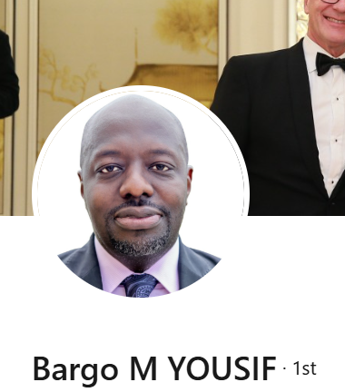

Dr. Brago M. Yousif
Co-Founder & Chief Executive Officer (CEO)
Dr. Yousif is the clinical inventor behind NèoMotion and brings deep experience with maternal health challenges in Chad and across Africa. He leads the company’s vision, government partnerships, clinical pilot strategy, and global expansion mission to reduce preventable fetal and maternal mortality.